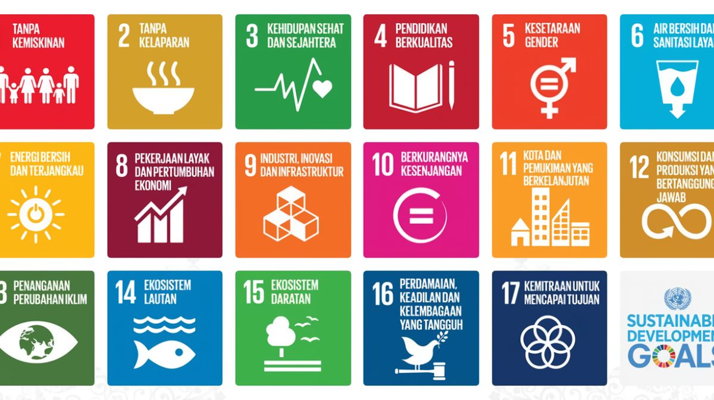
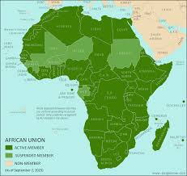

SDGS merupakan komitmen-komitmen global demi mencapai kehidupan yang lebih baik dan lebih berkelanjutan bagi semua orang. Meningkatkan kesejahteraan kepada generasi sekarang dan yang akan datang. Pada SDGS terdapat serangkaian tujuan (17 tujuan) yang ditetapkan oleh Perserikatan Bangsa-Bangsa (PBB). Tujuan tersebut untuk untuk mengatasi berbagai tantangan global yang kita hadapi.
Pada tujuan ketiga SDGs terdapat pernyataan mengenai kehidupan sehat dan sejahtera. Seperti yang diketahui, untuk dapat mencapai kesejahteraan, mencakup 3 nilai. Salah satunya adalah kesehatan. Kesehatan adalah fondasi dari hidup yang berkualitas dan sejahtera. Oleh karena itu, Tujuan sdgs ini adalah untuk menjamin kehidupan yang sehat dan meningkatkan kesejahteraan seluruh penduduk semua usia.
SDGs ini diambil dari isu global yang sering kita lihat/hadapi saat ini. Pertama pada isu ketidak rataan akses kesehatan. Ini menjadi masalah karena memperburuk berbagai masalah kesehatan yang
dapat dicegah. Lalu juga dalam segi vaksin, hingga saat ini kita masih menghadapi virus Covid. Adanya pembentukan vaksin covid membantu dalam pengurangan kasus covid. Dengan vaksin tubuh dapat
lebih siap melawan serangan penyakit tersebut. Ini juga merupakan salah satu sasaran global yang diangkat oleh SDGs ketiga ini yaitu mendukung penelitian dan pengembangan obat penyakit menular
serta penyebarannya yang merata.
Diharapkan dengan sdgs ini dapat menurunkan tingkat kematian serta meningkatkan akses kesehatan
ke seluruh negara di dunia. Dengan ini, dapat meningkatkan kesejahteraan seluruh penduduk.
Agar dapat mencapai tujuan dan sasaran SDGs dibutuhkan upaya kolektif bersama
sebab isu pada sdgs ini tidak hanya isu pribadi negara tetapi isu global yang dihadapi bersama.
Tantangannya bersifat kompleks sehingga tidak dapat diselesaikan oleh hanya satu negara.
SDGs ini merupakan komitmen global untuk menciptakan dunia yang lebih baik dan berkelanjutan.
Mengetahui hal tersebut, isu global menjadi tujuan dan motivasi oleh
negara di seluruh dunia untuk berorganisasi dan bekerjasama dalam upaya kolektif mencapai
tujuan-tujuan pada sdgs. Contoh upaya kolektif adalah melalui kerja sama internasional seperti kerja sama bilateral, multilateral dan regional.
Pada bidang kesehatan, di sela kegiatan Indonesia-Africa Forum ke-2 2024,
di Nusa Dua, Bali, Senin. Dikemukakan kerja sama di bidang kesehatan, membuka kolaborasi antara Perusahaan
farmasi milik negara Indonesia, Bio Farma, dan Atlantic Lab Science Ghana. Hal tersebut membantu meningkatkan
kapasitas dalam produksi Vaksin di Ghana.
Indonesia-Ghana juga menandatangani note kesepaham (MoU) mengenai pengawasan pangan dan obat-obatan antara otoritas pengawas kedua negara. Dengan MoU
tersebut dapat memperkuat sinergi di sektor farmasi Indonesia-Ghana serta pengawasan pangan dan obat-obatan antara otoritas kedua negara.
https://sdgs.bappenas.go.id/
https://sdgs.un.org/goals
Perpres-Nomor-111-Tahun-202
https://news.detik.com/berita/d-7520430/bertemu-presiden-ghana-jokowi-bahas-kerja-sama-kesehatan-energi
https://nasional.kompas.com/read/2024/09/02/15024381/jokowi-harap-kerja-sama-indonesia-ghana-dorong-produksi-vaksin-di-ghana
https://undiknas.ac.id/2024/05/sdg-pengertian-tujuan-dan-sasaran/